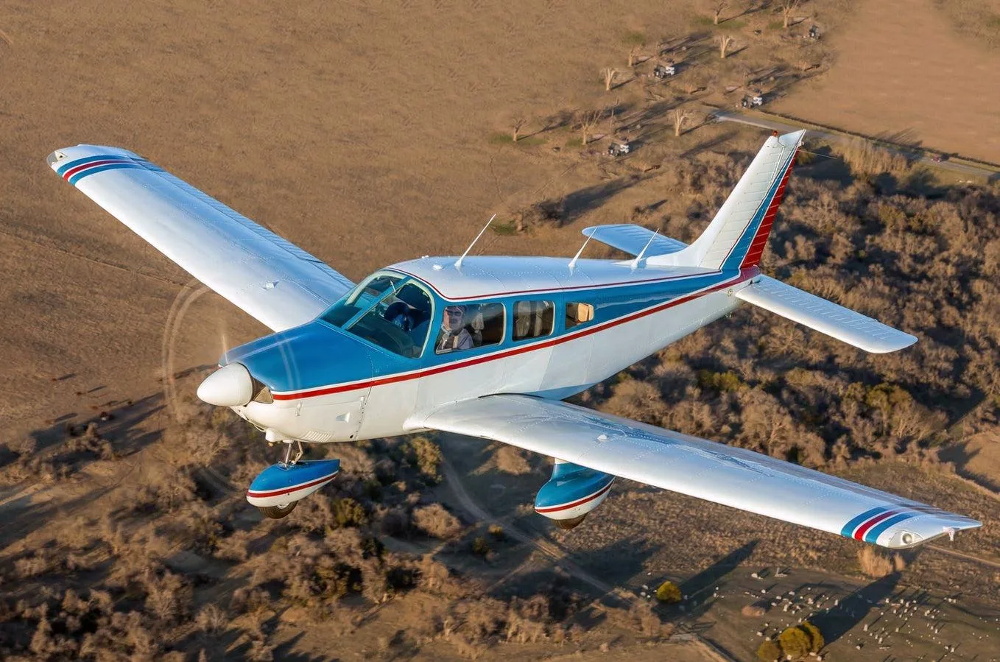
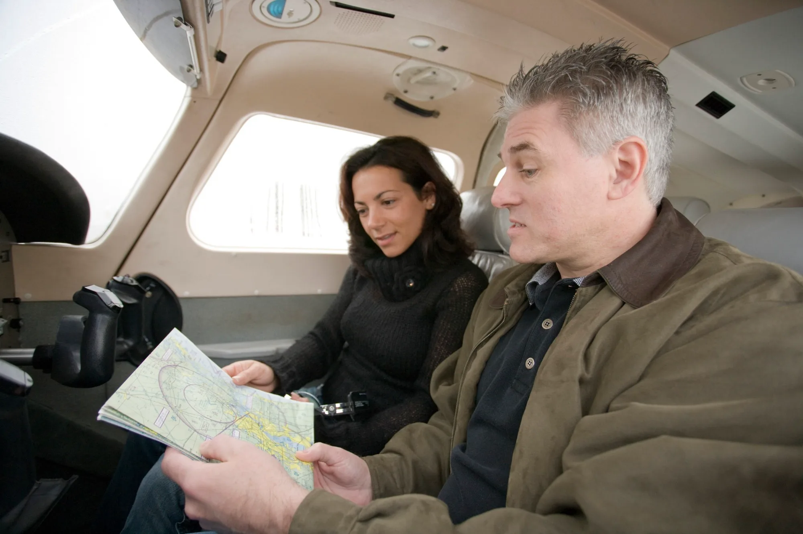
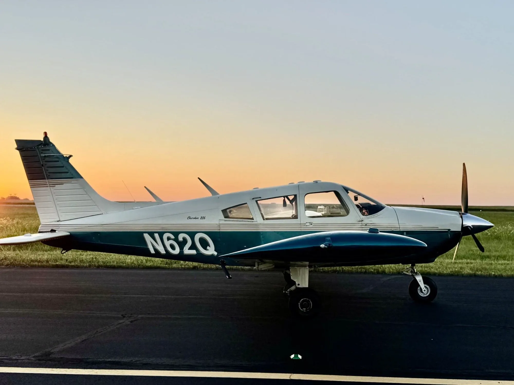

If you've been thinking about learning to fly in Austin, Texas, one of your first questions is probably: how long does it actually take to become a private pilot?
The answer depends on your schedule, how consistently you train, and how quickly you develop the skills required to fly safely and independently.
For many students, three to six months is a reasonable planning estimate when flying regularly. Others may finish sooner, while students training less frequently may take considerably longer.
Here's what to expect as you work toward your Private Pilot Certificate.
How Many Flight Hours Do You Need?
Under 14 CFR §61.109(a), the FAA requires a minimum of 40 flight hours for a private pilot certificate in the airplane single-engine category under Part 61.
Those hours must include specific types of training, including dual instruction, solo flight, cross-country flying, and night operations.
However, 40 hours is only the regulatory minimum.
Many students need additional training before they're ready for their practical test. For initial budgeting, planning for approximately 60–70 flight hours can be more realistic than assuming you'll finish at exactly 40.
Your instructor will evaluate your progress against the FAA's Airman Certification Standards, rather than simply counting hours.
How Your Training Schedule Affects Your Timeline
One of the biggest factors in how quickly you earn your certificate is training consistency.

Flying Once a Week
If you fly approximately once per week, completing your training may take six to twelve months or longer.
Weather cancellations, aircraft availability, and occasional scheduling conflicts can extend that timeline.
Flying Two or Three Times a Week
For many students, this is a practical balance between making consistent progress and managing work, school, or other responsibilities.
With regular lessons and effective ground-study habits, completing training in approximately three to six months may be achievable.
Flying Four or More Times a Week
An intensive training schedule can shorten the overall timeline considerably.
However, frequent flying doesn't automatically guarantee faster certification. You still need time to study, absorb new material, and demonstrate proficiency.
The best schedule is one you can maintain consistently.
What Are the Steps to Becoming a Private Pilot?
1. Complete the Required Ground Training
Before becoming a private pilot, you'll need to understand subjects such as aerodynamics, weather, aircraft systems, navigation, regulations, and aeronautical decision-making.
Ground training can take place through an approved home-study course, structured online instruction, and lessons with a flight instructor.
2. Begin Flight Lessons
You'll learn fundamental aircraft control, takeoffs and landings, airport operations, emergency procedures, and other essential flying skills.
Your instructor will gradually introduce more advanced tasks as your proficiency improves.
3. Complete Your First Solo Flight
Your first solo is one of the most memorable milestones in flight training.
Before authorizing it, your instructor must determine that you meet the applicable knowledge, proficiency, and endorsement requirements.
4. Complete Cross-Country and Night Training
You'll learn to navigate between airports, plan flights, manage fuel, interpret weather, and make sound decisions away from your home airport.
The FAA also requires specific night and cross-country experience.
5. Pass the Knowledge Test and Checkride
You'll need to pass the FAA Private Pilot Airplane knowledge test and successfully complete a practical test with an authorized examiner.
The checkride includes an oral evaluation and a flight portion.
Your goal isn't simply to pass a test. It's to demonstrate that you can exercise the privileges of a private pilot safely and responsibly.
Does Austin's Weather Affect Flight Training?
Absolutely.
Central Texas offers opportunities for flight training throughout the year, but local weather conditions can affect scheduling and lesson planning.
During the warmer months, high temperatures can reduce aircraft performance, while afternoon convection and thunderstorms may limit flying opportunities.
Cold fronts, low ceilings, gusty winds, and occasional winter weather can also disrupt lessons.
Training around Austin means learning to evaluate these conditions and make appropriate go/no-go decisions.
Weather-related delays are a normal part of flight training, and learning to recognize when not to fly is an important skill.
How Much Does a Private Pilot License Cost?
The total cost depends on several factors:
- Aircraft rental rates and fuel costs
- Instructor fees for flight and ground lessons
- Total flight hours needed to reach proficiency
- Training materials and equipment
- FAA knowledge test and examiner fees
- Medical certification expenses, when applicable
A useful approach is to request a cost estimate based on both the FAA minimum and a more realistic planning scenario.
For example, a budget based on 60 flight hours may give you a better financial starting point than one based solely on the 40-hour minimum.
Remember that actual costs vary by flight school, aircraft, and individual training progress.
Choosing a Flight School Near Austin, Texas
When comparing flight schools in Austin and the surrounding communities, consider more than just the advertised hourly aircraft rental rate.
Ask about aircraft availability, instructor scheduling, maintenance practices, lesson structure, cancellation policies, and the school's approach to student progress.
A lower hourly rate doesn't necessarily translate into lower total training costs if inconsistent scheduling leads to additional review lessons.
A well-organized training program can help you build proficiency efficiently while maintaining a strong emphasis on safety.

Start Planning Your Flight Training with Apex Aviation
At Apex Aviation, we're working to bring structured, student-focused flight training to the greater Austin area.
Our approach emphasizes practical aeronautical knowledge, sound decision-making, and a clear training progression from your first lesson through checkride preparation.
Whether you're pursuing aviation as a career or simply want the freedom to fly, understanding the training process is the first step.
Ready to learn more? Apex's single-aircraft training is planned for Austin, targeting March 2027. Join the interest list for updates, or reach out directly about future flight training opportunities in Central Texas.
Training timelines are estimates, not guarantees. FAA requirements depend on the certificate, aircraft category, and applicable regulations.